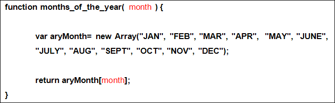
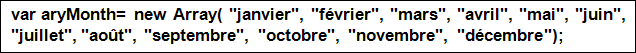
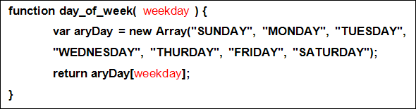
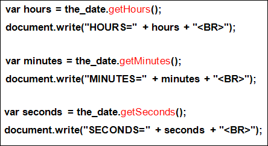
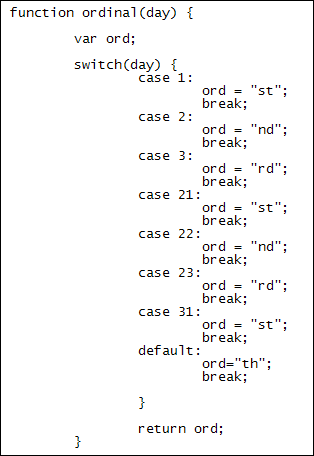

Javascript Customised Dates
This lesson continues from the previous one
Once you have a Date object you have quite a lot of inbuilt properties available to you. These allow you to get just the parts of the date and time that you require.Let's have a look at them.
Get the year
If you just want the year, add getFullYear to the end of your date object. Like this:
var the_date = new Date();
var year = the_date.getFullYear();
document.write(year + "<BR>");
You can also use getUTCYear. There is a slight difference between the
two: FullYear gets the locale year, the one we all get globally. But if it's
31st December and heading towards Jan 1 of the next year then the locale year
could be wrong; UTCFullYear gets the universal year - in other words, it corrects
for the end of year problem. It's up to you which one you want to use.
Get the month
To get the month of the year, use getMonth:
var month = the_date.getMonth();
document.write( month + "<BR>");
However, this will only get you a number from 0 to 11 (0 is January and 11 December). If you want to turn it into an actual month you'll need your own function. In the code below, we've set up an array to hold all the month names:

You can then call this function like this:
document.write( months_of_the_year( month ) + "<BR>");
With month being a number you can use it to access a position in the array.
The return value will then be whatever text is at that position.
You can even customise your month array. So if you want the months in French,
for example, you could do this:

You don't have to use an array. You can use a switch statement, if you prefer, with each case a month number.
Get the day of the month
To get the day of the month, rather oddly you need getDate. This doesn't get you today's date but a number from 1 to 31, which is the day of the month.
var day_of_month = the_date.getDate();
document.write( day_of_month + "<BR>" );
Get the weekday
To get the day of the week you use getDay. A number from 0 to 6 will be returned, with 0 being Sunday and 6 being Saturday:
var weekday = the_date.getDay();
document.write( weekday + "<BR>");
Again, you can set up a function to return a name from the weekday number:

To call the function you can then do this:
document.write( day_of_week(weekday) + "<BR>");
Get the hours, the minutes, and the seconds
To get the various part of the time, you can use getHours, getMinutes, and getSeconds:

You can then join then together through concatenation:
document.write( hours +":" + minutes + ":" + seconds + "<BR>");
If you want ordinals at the end of your month day then you will have to write
your own function. (An ordinal is the st, nd, rd, or th at the end of the number,
like 1st, 2nd 3rd, 4th.) The function below returns the ordinal for a month
day:

Here, we've used a switch statement. In English, for the numbers 1 to 31, there are only 7 endings that are not "th". The switch statement tests what is in the variable called day. It returns the ending corresponding to the number, or a default of "th".
To call this function you could then do this:
document.write( day_of_month + ordinal( day_of_month ) );
And that's it for dates and times. Play around with them and see how you get on. In the next section, you'll see how Javascript can interact with HTML forms.